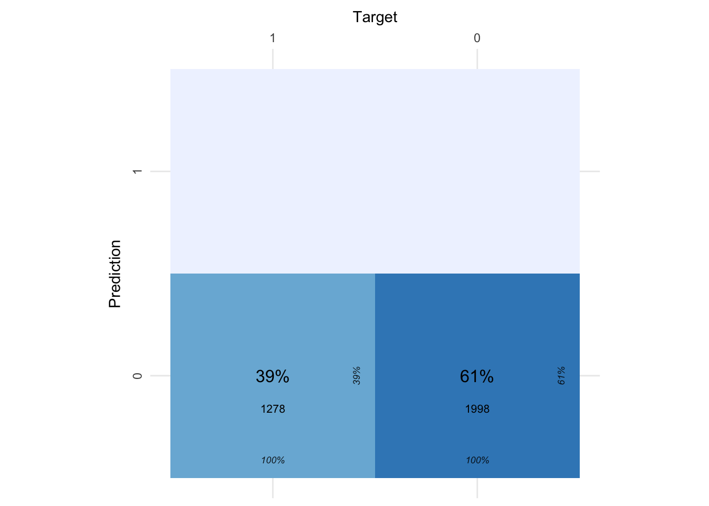
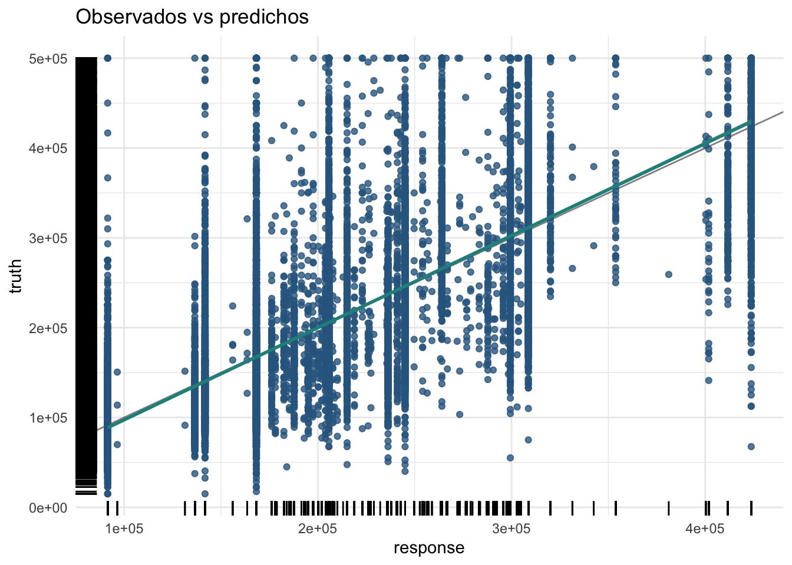
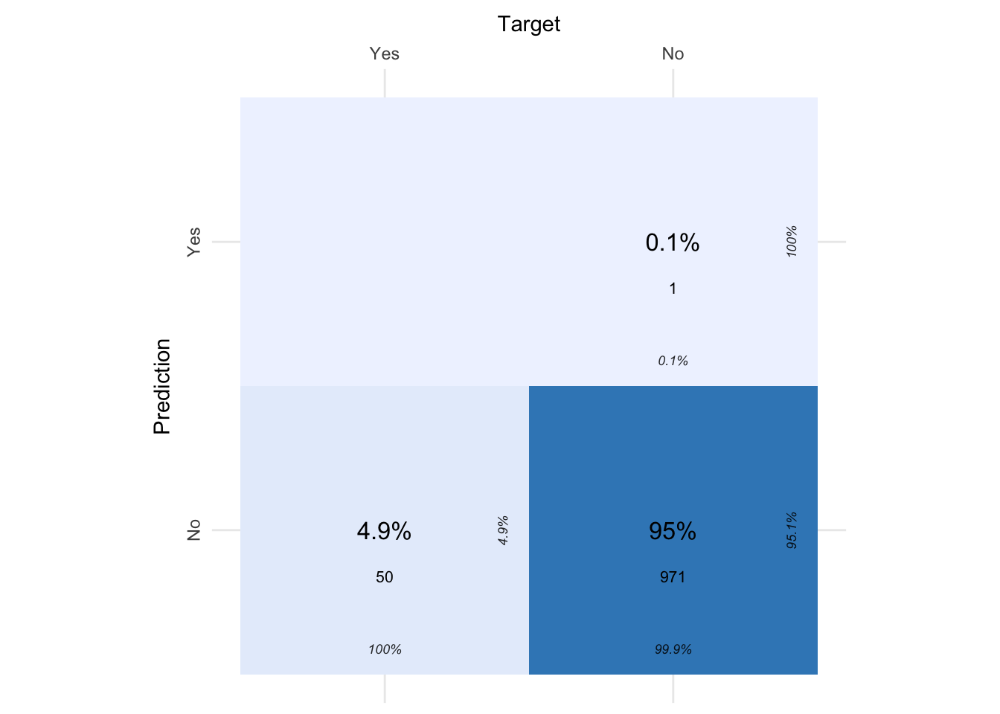
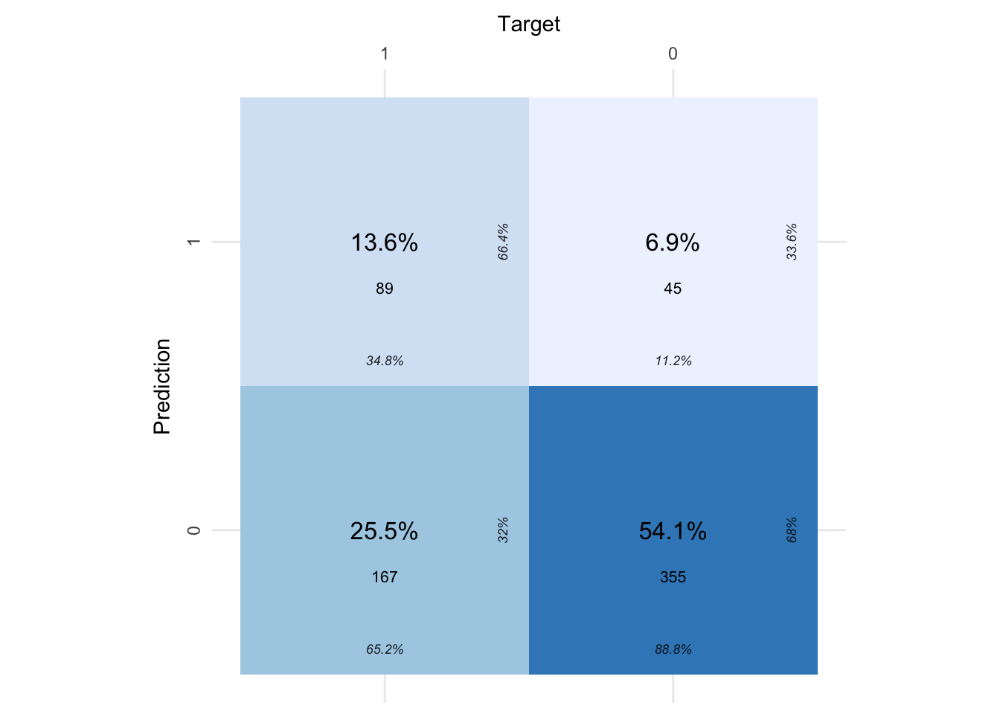

# Paquetes anteriores
library(tidyverse)
library(sjPlot)
library(knitr) # para formatos de tablas
library(skimr)
library(DataExplorer)
library(GGally)
library(gridExtra)
library(ggpubr)
library(cvms)
library(kknn)
library(rpart.plot)
theme_set(theme_sjplot2())
# Paquetes AA
library(mlr3verse)
library(mlr3tuning)
library(mlr3tuningspaces)13 Modelos de conjunto (Ensemble models)
Como ya se comentó en temas anteriores todos los modelos de aprendizaje automático sufren el problema de equilibrio entre sesgo y varianza. A medida que aumenta la complejidad de un modelo, este dispone de mayor flexibilidad para adaptarse a las observaciones, reduciendo así el sesgo y mejorando su capacidad predictiva. Sin embargo, alcanzado un determinado grado de flexibilidad, aparece el problema de sobreajuste, el modelo se ajusta tanto a los datos de entrenamiento que es incapaz de predecir correctamente nuevas observaciones.
Los métodos de modelos conjuntos (Ensemble Models) combinan múltiples modelos en uno nuevo con el objetivo de lograr un equilibro entre sesgo y varianza, tratando de obtener mejores predicciones o clasificaciones que cualquiera de los modelos individuales originales.
El principal reto no es obtener modelos individuales muy precisos y/o complejos, sino obtener modelos que cometan diferentes tipos de errores. Por ejemplo, si se utilizan conjuntos para la clasificación, se pueden conseguir altas precisiones si diferentes modelos base clasifican mal diferentes ejemplos de entrenamiento, incluso si la precisión del clasificador base es baja. De esta forma la combinación de todos los clasificadores nos acerca a la solución óptima.
En la práctica existen dos metodologías para la obtención de modelo de conjunto: Bagging, o método a partir de modelos individuales independientes, y Boosting o método a partir de modelos secuenciales.
En la metodología Bagging se ajustan múltiples modelos, cada uno con un subconjunto distinto de los datos de entrenamiento. En esta situación los modelos que forman el agregado participan aportando de forma individual su predicción o clasificación. Como valor final, se toma la media de todas las predicciones de los modelos individuales si estamos en un problema de regresión o la clase más frecuente del conjunto de soluciones aportadas por todos los clasificadores individuales. Los algoritmos más habituales dentro de este grupo son los de voto por mayoría, bosques aleatorios, y clasificadores Bagging. A continuación se presenta una imagen de este proceso:

En este tema nos centramos en el estudio de los métodos de bagging, mientras que en el tema siguiente abordaremos los modelos de boosting.
13.1 Modelos básicos Bagging
El término bagging es el diminutivo de bootstrap agregation (bootstrap agregativo), y hace referencia al empleo del muestreo repetido con reposición bootstrapping con el fin de reducir la varianza de algunos modelos de aprendizaje estadístico haciendo uso del famoso resultado estadístico conocido como teorema central del límite.
Dicho teorema nos dice que si disponemos de n variables aleatorias independientes con varianza \(\sigma^2\) para cada una de ellas, entonces la varianza de la media de todas ellas es \(\sigma^2/n\). En otras palabras, promediando un conjunto de observaciones se reduce la varianza.
Basándose en esta idea, una forma de reducir la varianza y aumentar la precisión de un método predictivo es obtener múltiples muestras de la población, ajustar un modelo distinto con cada una de ellas, y hacer la media (la moda en el caso de variables cualitativas) de las predicciones resultantes. Como en la práctica no se suele tener acceso a múltiples muestras, se puede simular el proceso recurriendo a la técnica de bootstrap, que genera pseudo-muestras a partir del conjunto de datos disponible mediante muestreo con reemplazamiento. Se ajusta entonces los diferentes modelos individuales propuestos a cada una de las pseudo-muestras y se agregan los resultados obtenidos en función de la variable objetivo considerada.
Los dos algoritmos de bagging más utilizados son el de voto por mayoría o bagging por lotes.
13.1.1 Voto por mayoría
El método de voto por mayoría es el más habitual dentro de los modelos de conjunto por agregación. Supongamos que ajustamos \(L\) modelos de aprendizaje distintos sobre toda la muestra de entrenamiento para resolver un problema de clasificación o regresión. Obtenemos ahora la predicción para la muestra de test ( de tamaño \(m\)) para cada uno de los \(L\) modelos mediante:
- los valores predichos \(\hat{y}_1,\hat{y}_2,..., \hat{y}_m\) si estamos en un problema de regresión, o
- los valores de clasificación predichos \(\hat{c}_1,\hat{c}_2,..., \hat{c}_m\) si nos enfrentamos a un problema de clasificación donde la variable respuesta puede tomar \(k\) valores distintos.
Para la construcción de la predicción para el modelo de conjunto se procede obteniendo:
- la media de los valores predichos en un problema de regresión
\[\hat{y}_{ensemble} = \frac{\sum_{i=1}^m \hat{y}_i}{m},\]
- la moda de los valores de clasificación en un problema de clasificación
\[\hat{c}_{ensemble} = \text{moda}\{\hat{c}_1,\hat{c}_2,..., \hat{c}_m\}.\]
En el problema de clasificación si los \(L\) modelos considerados pueden estimar las probabilidades de cada clase tendremos una matriz estimada de probabilidades de dimensiones \(Lxk\),
\[\begin{equation} \begin{pmatrix} p_{1,1} & p_{1,2} &...& p_{1,k}\\ p_{2,1} & p_{2,2} &...& p_{2,k}\\ ... & ... &...& ...\\ p_{L-1,1} & p_{L-1,2} &...& p_{L-1,k}\\ p_{L,1} & p_{L,2} &...& p_{L,k} \end{pmatrix} \end{equation}\]En esta situación tomamos como clase resultante la que proporcione un mayor valor promedio (por columnas) de las probabilidades obtenidas. Este procedimiento suele dar mejores resultados que el voto por mayoría estándar ya que nos permite tener en cuenta la variabilidad de las predicciones.
13.1.2 Bagging por lotes
En el bagging por lotes en lugar de entrenar diferentes algoritmos sobre el conjunto completo de datos de entrenamiento y promediar sus resultados como hace el voto por mayoría, este método entrena un único o múltiples clasificadores/regresores en diferentes subconjuntos o submuestras de los datos de entrenamiento y agrega los resultados en todos los subconjuntos de forma similar al voto por mayoría.
Este método de bagging por lotes resulta de gran utilidad para reducir el problema de sobreajuste cuando trabajamos con modelos complejos como los proporcionados por los árboles de decisión. Estos modelos basados en árboles son los que veremos más tarde bajo el nombre de bosques aleatorios.
Dada la naturaleza de construcción de los estimadores de bagging por lotes donde usamos submuestras con reemplazamiento resulta posible estimar el error de test sin necesidad de recurrir a métodos de validación cruzada. Las submuestras que son utilizadas sobre cada modelo de aprendizaje se conocen como “in of bag” mientras que las que no son utilizadas se conocen como “out of bag”. Estas últimas son utilizadas como si fuera una muestra de validación para valorar el error cometido dentro de cada uno de los modelos de aprendizaje que conforman el modelo conjunto. Definimos así el OOB error asociado con cada uno de los modelos individuales a partir de esa muestra. Dos limitaciones de este proceso son:
El Out-of-Bag Error no es adecuado cuando las observaciones tienen una relación temporal (series temporales). Como la selección de las observaciones que participan en cada entrenamiento es aleatoria, no respetan el orden temporal y se estaría introduciendo información a futuro.
El preprocesado de los datos de entrenamiento se hace de forma conjunta, por lo que las observaciones out-of-bag pueden sufrir “data leakage”, es decir utilizan información de la muestra de entrenamiento para el ajuste del modelo. De ser así, las estimaciones del OOB-error son demasiado optimistas.
En el método de bagging por lotes resulta necesario también establecer ciertos hiperparámetros asociados con la forma de selección de las submuestras, el proceso de reemplazamiento y los correspondientes al modelo de aprendizaje de cada submuestra. En la descripción de cada uno de esos algoritmos que veremos más adelante se presentarán las características propias de cada uno de ellos. Por el momento incluiremos los correspondientes a la selección de submuestras.
13.2 Modelos básicos Bagging en mlr3
Aunque la librería mlr3 nos permite programar manualmente un algoritmo de bagging, lo habitual es utilizar los pipelines pre-construidos para bagging que están disponibles con ppl("bagging"). Para configurar estos pipelines debemos añadir como parámetros:
El
learnerographlearnerque utilizaremos en el proceso de bagging.El número de iteraciones o repeticiones que usaremos durante el proceso de bagging, identificado con el parámetro
iterations.La proporción de muestras en el conjunto de entrenamiento, identificado con el parámetro
frac.El
PipeOpque utilizamos para promediar los resultados, identificado con el parámetroaverager. Las opciones por defecto son:po("classifavg", collect_multiplicity = TRUE))para el voto por mayoría (problemas de clasificación) guardando las predicciones individuales de cada modelo.po("regravg", collect_multiplicity = TRUE))para el valor promedio de todos los modleos (problemas de regresión) guardando las predicciones individuales de cada modelo.
El resultado de esta función es un graphlearner con los métodos asociados habituales.
Antes de presentar los bancos de datos que utilizaremos para mostrar el uso de los modelos de bagging más básicos, cargamos todas las librerías necesarias.
13.2.1 Bancos de datos
Para ejemplificar el uso de los modelos de bagging básicos vamos a utilizar tres bancos de datos: Stroke, Water Potability, y Housing in California que se pueden consultar en el tema 4. De los tres con el único con el que no hemos trabajado hasta ahora es Water Potability. A continuación se muestra el código necesario para la carga de cada uno de esos bancos de datos, y la creación de la tarea correspondiente. Los dos primeros corresponden a problemas de clasificación mientras que el último se corresponde con un problema de regresión.
13.2.1.1 Stroke
El código para este banco de datos es:
13.2.1.2 Water Potability
El agua potable es el derecho humano más básico y un factor importante para la salud. El conjunto de datos Water potability, tiene por objetivo estudiar la potabilidad del agua utilizando varias propiedades químicas debido a su importancia como cuestión de salud y desarrollo a nivel nacional, regional y local. En algunas regiones, se ha demostrado que las inversiones en abastecimiento de agua y saneamiento pueden producir un beneficio económico neto, ya que la reducción de los efectos adversos para la salud y los costes de la atención sanitaria superan los costes de las intervenciones. EL target de interés potability indica si la muestra de agua es potable o no en función de: pH, Hardness, Solids, Chloramines, Sulfate, Conductivity, Organic_carbon, Trihalomethanes, y Turbidity. Este banco de datos contiene valores perdidos en diferentes variables.
Valoramos la presencia de missings
Potability Chloramines Conductivity Hardness Organic_carbon
0 0 0 0 0
Solids Sulfate Trihalomethanes Turbidity ph
0 781 162 0 491 Aparecen valores perdidos en tres de las posibles predictoras. Representamos los datos:
13.2.1.3 Housing in California
Cargamos los datos correspondientes:
13.2.2 Modelos
Elaboramos nuestros primeros modelos de bagging para los diferentes bancos de datos. Utilizamos el voto por mayoría y el promedio de predicciones para resolver las tareas de clasificación y regresión.
13.2.2.1 Stroke
Para el proceso de bagging hemos de definir en primer caso el algoritmo de aprendizaje asociado. Utilizamos como base los modelos de árboles de decisión vistos en el tema anterior.
# Preprocesamiento
pp_stroke = po("imputemedian", affect_columns = selector_type("numeric"))
# Modelo de aprendizaje combinando preprocesado y algoritmo
dt_classif_stroke = as_learner(pp_stroke %>>%
lrn("classif.rpart", keep_model = TRUE, predict_type = "prob",
cp = 0.0003562633,
minsplit = 10,
maxdepth = 6))
dt_classif_stroke$id = "TreeDecision"Definimos ahora el grpahlearner asociado con el proceso de bagging utilizando la función ppl y comparamos con el resultado de un único árbol de decisión. Realizamos un proceso de validación cruzada con cinco repeticiones para obtener resultados más estables:
set.seed(345)
# Graphleaner para bagging
bgg_stroke = ppl("bagging", dt_classif_stroke,
iterations = 10, frac = 0.8, averager = po("classifavg", collect_multiplicity = TRUE))
bgg_stroke = as_learner(bgg_stroke)
bgg_stroke$id = "Bagging"
# Comparación de modelos simple y ponderado
learners = c(dt_classif_stroke, bgg_stroke)
bmr = benchmark(benchmark_grid(tsk_stroke, learners,
rsmp("cv", folds = 5)))INFO [18:09:30.192] [mlr3] Running benchmark with 10 resampling iterations
INFO [18:09:30.338] [mlr3] Applying learner 'TreeDecision' on task 'stroke' (iter 1/5)
INFO [18:09:30.547] [mlr3] Applying learner 'TreeDecision' on task 'stroke' (iter 2/5)
INFO [18:09:31.158] [mlr3] Applying learner 'TreeDecision' on task 'stroke' (iter 3/5)
INFO [18:09:31.461] [mlr3] Applying learner 'TreeDecision' on task 'stroke' (iter 4/5)
INFO [18:09:31.708] [mlr3] Applying learner 'TreeDecision' on task 'stroke' (iter 5/5)
INFO [18:09:31.940] [mlr3] Applying learner 'Bagging' on task 'stroke' (iter 1/5)
INFO [18:09:35.013] [mlr3] Applying learner 'Bagging' on task 'stroke' (iter 2/5)
INFO [18:09:37.522] [mlr3] Applying learner 'Bagging' on task 'stroke' (iter 3/5)
INFO [18:09:39.906] [mlr3] Applying learner 'Bagging' on task 'stroke' (iter 4/5)
INFO [18:09:42.508] [mlr3] Applying learner 'Bagging' on task 'stroke' (iter 5/5)
INFO [18:09:44.880] [mlr3] Finished benchmark nr task_id learner_id resampling_id iteration classif.bacc
1: 1 stroke TreeDecision cv 1 0.4989723
2: 1 stroke TreeDecision cv 2 0.5069136
3: 1 stroke TreeDecision cv 3 0.5158848
4: 1 stroke TreeDecision cv 4 0.5448560
5: 1 stroke TreeDecision cv 5 0.5091753
6: 2 stroke Bagging cv 1 0.4994861
7: 2 stroke Bagging cv 2 0.5079424
8: 2 stroke Bagging cv 3 0.5000000
9: 2 stroke Bagging cv 4 0.4994856
10: 2 stroke Bagging cv 5 0.4994856
Hidden columns: uhash, task, learner, resampling, prediction nr task_id learner_id resampling_id iters classif.bacc
1: 1 stroke TreeDecision cv 5 0.5151604
2: 2 stroke Bagging cv 5 0.5012799
Hidden columns: resample_resultComo se puede ver en los resultados obtenidos el modelo de conjunto proporciona casi los mismo resultados que el modelo individual. En este caso la ponderación no mejora ya que el modelo individual también era bastante malo. Veamos gráficamente al comparación entre lo scores del modelo basal y del ponderado.
Podemos obtener los resultados del modelo bagging de forma similar a otros modelos de aprendizaje automático:
# Entrenamos el modelo
bgg_stroke$train(tsk_stroke)
# Construimos la predicción
pred = bgg_stroke$predict(tsk_stroke)
pred<PredictionClassif> for 5110 observations:
row_ids truth response prob.No prob.Yes
1 Yes No 0.7080569 0.291943082
2 Yes No 0.8683200 0.131680027
3 Yes No 0.8566943 0.143305654
---
5108 No No 0.9924404 0.007559553
5109 No No 0.9187222 0.081277750
5110 No No 0.9924404 0.007559553Evaluamos la matriz de confusión:
13.2.2.2 Water Potability
En este caso vamos a utilizar como modelo base de aprendizaje un modelo de regresión logística donde estamos interesados en conocer la probabilidad de que una muestra se clasifique como agua potable en función de las predictoras consideradas. Dado que todas las predictoras son numéricas (y relacionadas entre si como hemos visto en la interpretación gráfica de los datos) y algunas contienen valores perdidos consideramos un modelo penalizado (en este caso elastic net con peso igual a 0.5) y el correspondiente preprocesado. En primer lugar generamos la tarea de nuevo identificando la categoría de interés:
# Preprocesado
pp_water = po("imputemedian", affect_columns = selector_type("numeric")) %>>%
po("scale", param_vals = list(center = TRUE, scale = TRUE))
# Definimos learner basal
learner = lrn("classif.cv_glmnet", type.logistic = "Newton", standardize = FALSE,
alpha = 0.5, predict_type = "prob")
# Graphlearner: Preprocesado y learner
logm_classif_water = as_learner(pp_water %>>% learner)
logm_classif_water$id = "LogisticReg"Construíos el modelo de bagging y vemos los resultados obtenidos:
set.seed(345)
# Graphleaner para bagging
bgg_water = ppl("bagging", logm_classif_water,
iterations = 10, frac = 0.8, averager = po("classifavg", collect_multiplicity = TRUE))
bgg_water = as_learner(bgg_water)
bgg_water$id = "Bagging"
# Comparación de modelos simple y ponderado
learners = c(logm_classif_water, bgg_water)
bmr = benchmark(benchmark_grid(tsk_water, learners,
rsmp("cv", folds = 5)))INFO [18:09:49.843] [mlr3] Running benchmark with 10 resampling iterations
INFO [18:09:49.851] [mlr3] Applying learner 'LogisticReg' on task 'waterpot' (iter 1/5)
INFO [18:09:50.402] [mlr3] Applying learner 'LogisticReg' on task 'waterpot' (iter 2/5)
INFO [18:09:50.853] [mlr3] Applying learner 'LogisticReg' on task 'waterpot' (iter 3/5)
INFO [18:09:51.304] [mlr3] Applying learner 'LogisticReg' on task 'waterpot' (iter 4/5)
INFO [18:09:51.976] [mlr3] Applying learner 'LogisticReg' on task 'waterpot' (iter 5/5)
INFO [18:09:52.555] [mlr3] Applying learner 'Bagging' on task 'waterpot' (iter 1/5)
INFO [18:09:56.946] [mlr3] Applying learner 'Bagging' on task 'waterpot' (iter 2/5)
INFO [18:10:02.478] [mlr3] Applying learner 'Bagging' on task 'waterpot' (iter 3/5)
INFO [18:10:08.481] [mlr3] Applying learner 'Bagging' on task 'waterpot' (iter 4/5)
INFO [18:10:13.913] [mlr3] Applying learner 'Bagging' on task 'waterpot' (iter 5/5)
INFO [18:10:18.298] [mlr3] Finished benchmark nr task_id learner_id resampling_id iteration classif.bacc
1: 1 waterpot LogisticReg cv 1 0.5
2: 1 waterpot LogisticReg cv 2 0.5
3: 1 waterpot LogisticReg cv 3 0.5
4: 1 waterpot LogisticReg cv 4 0.5
5: 1 waterpot LogisticReg cv 5 0.5
6: 2 waterpot Bagging cv 1 0.5
7: 2 waterpot Bagging cv 2 0.5
8: 2 waterpot Bagging cv 3 0.5
9: 2 waterpot Bagging cv 4 0.5
10: 2 waterpot Bagging cv 5 0.5
Hidden columns: uhash, task, learner, resampling, prediction nr task_id learner_id resampling_id iters classif.bacc
1: 1 waterpot LogisticReg cv 5 0.5
2: 2 waterpot Bagging cv 5 0.5
Hidden columns: resample_resultPodemos ver que el comportamiento con ambas modelizaciones nos proporciona el mismo resultado. La solución es bastante estable aunque bastante deficiente. Analizamos con detalle el modelo bagging que hemos construido:
# Entrenamos el modelo
bgg_water$train(tsk_water)
# Construimos la predicción
pred = bgg_water$predict(tsk_water)
# matriz de confusión
cm = confusion_matrix(pred$truth, pred$response)
plot_confusion_matrix(cm$`Confusion Matrix`[[1]]) 
Se ve claramente el mal funcionamiento del modelo ya que clasifica todas las muestras como no potable, a pesar de que el número de muestras que originalmente eran potables es bastante elevado.
13.2.2.3 Housing in California
En este caso nos enfrentamos a un problema de regresión, pero en lugar de utilizar un modelo lineal como modelo basal vamos a utilizar un árbol de decisión con las configuraciones por defecto. En primer lugar configuramos el modelo basal.
# Preprocesamiento
pp_housing =
po("scale", param_vals = list(center = TRUE, scale = TRUE)) %>>%
po("imputemedian", affect_columns = selector_type("numeric"))
# Modelo de aprendizaje combinando preprocesado y algoritmo
dt_regr_housing = as_learner(pp_housing %>>%
lrn("regr.rpart", keep_model = TRUE))
dt_regr_housing$id = "TreeDecision"Establecemos ahora el modelo bagging
set.seed(345)
# Graphleaner para bagging
bgg_housing = ppl("bagging", dt_regr_housing,
iterations = 10, frac = 0.8, averager = po("regravg", collect_multiplicity = TRUE))
bgg_housing = as_learner(bgg_housing)
bgg_housing$id = "Bagging"
# Comparación de modelos simple y ponderado
learners = c(dt_regr_housing, bgg_housing)
bmr = benchmark(benchmark_grid(tsk_housing, learners,
rsmp("cv", folds = 5)))INFO [18:10:24.037] [mlr3] Running benchmark with 10 resampling iterations
INFO [18:10:24.044] [mlr3] Applying learner 'TreeDecision' on task 'housingCA' (iter 1/5)
INFO [18:10:24.402] [mlr3] Applying learner 'TreeDecision' on task 'housingCA' (iter 2/5)
INFO [18:10:24.775] [mlr3] Applying learner 'TreeDecision' on task 'housingCA' (iter 3/5)
INFO [18:10:25.157] [mlr3] Applying learner 'TreeDecision' on task 'housingCA' (iter 4/5)
INFO [18:10:25.603] [mlr3] Applying learner 'TreeDecision' on task 'housingCA' (iter 5/5)
INFO [18:10:26.009] [mlr3] Applying learner 'Bagging' on task 'housingCA' (iter 1/5)
INFO [18:10:31.175] [mlr3] Applying learner 'Bagging' on task 'housingCA' (iter 2/5)
INFO [18:10:37.142] [mlr3] Applying learner 'Bagging' on task 'housingCA' (iter 3/5)
INFO [18:10:43.292] [mlr3] Applying learner 'Bagging' on task 'housingCA' (iter 4/5)
INFO [18:10:48.688] [mlr3] Applying learner 'Bagging' on task 'housingCA' (iter 5/5)
INFO [18:10:54.347] [mlr3] Finished benchmark nr task_id learner_id resampling_id iteration regr.smape
1: 1 housingCA TreeDecision cv 1 0.2744759
2: 1 housingCA TreeDecision cv 2 0.2768960
3: 1 housingCA TreeDecision cv 3 0.2748795
4: 1 housingCA TreeDecision cv 4 0.2739820
5: 1 housingCA TreeDecision cv 5 0.2774013
6: 2 housingCA Bagging cv 1 0.2690379
7: 2 housingCA Bagging cv 2 0.2753205
8: 2 housingCA Bagging cv 3 0.2705382
9: 2 housingCA Bagging cv 4 0.2717273
10: 2 housingCA Bagging cv 5 0.2735402
Hidden columns: uhash, task, learner, resampling, prediction nr task_id learner_id resampling_id iters regr.smape
1: 1 housingCA TreeDecision cv 5 0.2755269
2: 2 housingCA Bagging cv 5 0.2720328
Hidden columns: resample_resultAunque los resultados son muy similares para ambas modelizaciones, podemos ver que el sMAPE es algo inferior para el modelo bagging que para el modelo basal. Mejoramos, aunque muy levemente, la capacidad explicativa de nuestro modelo. En este caso también podríamos evaluar la capacidad del modelo mediante la representación gráfica de los valores observados frente a los predichos por el modelo.
# Entrenamiento
bgg_housing$train(tsk_housing)
# Predicción
pred = bgg_housing$predict(tsk_housing)
# Gráfico
autoplot(pred, type = "xy") + labs(title = "Observados vs predichos")
Claramente la nube de puntos es muy dispersa y el modelo no es capaz de ajustar correctamente.
Los modelos de bagging tienden a producir soluciones muy similares a los de los modelos de base utilizados, dado que siempre se utilizan todas las observaciones y todas las predictoras en cada iteración de la ponderación. Sin embargo, se pueden construir otro tipo de modelos de bagging en los que en cada iteración se puede usar un conjunto de entrenamiento diferente y un conjunto de predictoras, en lugar de todas ellas. Estos son los modelos de bosques aleatorios que pasamos a describir a continuación.
13.3 Bosques aleatorios (Random Forests)
Un modelo de bosque aleatorio está formado por un conjunto de árboles de decisión individuales, cada uno entrenado con una muestra ligeramente distinta de los datos de entrenamiento generada mediante bootstrapping. La predicción de una nueva observación se obtiene agregando las predicciones de todos los árboles individuales que forman el modelo.
Muchos métodos predictivos generan modelos globales en los que disponemos de una única ecuación o modelo de predicción. Sin embargo, en situaciones complejas con múltiples predictores, que interaccionan entre ellos de forma compleja y no lineal, es muy difícil encontrar un modelo predictivo lo suficientemente preciso. Como ya hemos visto anteriormente los árboles de decisión nos permiten obtener un modelo con el que podemos manejar de forma sencilla relaciones complejas entre las posibles predictoras
Ahora, como ya hemos visto, la utilización de los árboles de decisión no está exenta de dificultades y por ese motivo se introduce aquí el algoritmo de bosque aleatorio que es un método de conjunto bagging que nos permite mejorar la capacidad predictiva de los árboles de decisión individuales.
Entre las ventajas del uso de este tipo de algoritmo podemos destacar:
- Son capaces de seleccionar predictores de forma automática.
- Pueden aplicarse a problemas de regresión y clasificación.
- Al tratarse de métodos no paramétricos no es necesario que se cumpla ningún tipo de distribución específica.
- Por lo general, requieren mucha menos limpieza y preprocesado de los datos en comparación a otros métodos de aprendizaje estadístico (por ejemplo, no requieren estandarización).
- No se ven muy influenciados por outliers.
- Son muy útiles en la exploración de datos, permiten identificar de forma rápida y eficiente las variables (predictores) más importantes.
- Gracias al Out-of-Bag Error puede estimarse su error de validación sin necesidad de recurrir a estrategias computacionalmente costosas como la validación cruzada.
Entre las desventajas podemos destacar:
- Al combinar múltiples árboles, se pierde la interpretabilidad que tienen los modelos basados en un único árbol.
- Cuando tratan con predictores continuos pierden parte de su información al categorizarlas en el momento de la división de los nodos.
- Por la forma de construcción de los árboles de decisión los predictores continuos o predictores cualitativos con muchos niveles tienen mayor probabilidad de contener, solo por azar, algún punto de corte óptimo, por lo que suelen verse favorecidos en la creación de los árboles.
- No son capaces de extrapolar fuera del rango de los predictores observados en los datos de entrenamiento.
13.3.1 Algortimo Bosques aleatorios
Antes de presentar el algoritmo específico del bosque aleatorio es necesario conocer como funciona el proceso de bagging para un único árbol de decisión. Dicho algoritmo se organiza en tres pasos:
- Generar 𝐵 pseudo-training sets mediante bootstrapping a partir de la muestra de entrenamiento original.
- Entrenar un árbol con cada una de las 𝐵 muestras del paso 1. Cada árbol se crea sin apenas restricciones y no se somete a pruning, por lo que tiene varianza alta pero poco sesgo. En la mayoría de casos, la única regla de parada es el número mínimo de observaciones que deben tener los nodos terminales. El valor óptimo de este hiperparámetro puede obtenerse comparando el out of bag error o mediante validación cruzada.
- Para cada una de la muestras de validación, se obtiene la predicción en cada uno de los 𝐵 árboles. El valor final de la predicción se obtiene como la media de las 𝐵 predicciones en el caso de variables cuantitativas y como la clase predicha más frecuente (moda) para variables cualitativas.
En el algoritmo descrito, el número de árboles creados no es un hiperparámetro crítico en cuanto a que, por mucho que se incremente el número, no se aumenta el riesgo de overfitting. Alcanzado un determinado número de árboles, la reducción del test error se estabiliza. A pesar de ello, cada árbol ocupa memoria, por lo que no conviene almacenar más de los necesarios.
El algoritmo de Random Forest es una modificación del proceso de bagging anterior que consigue mejorar los resultados gracias a que considera árboles lo más independientes posibles.
Supóngase un conjunto de datos en el que hay un predictor muy influyente, junto con otros moderadamente influyentes. En este escenario, todos o casi todos los árboles creados en el proceso de bagging estarán dominados por el mismo predictor y serán muy parecidos entre ellos. Como consecuencia de la alta correlación entre los árboles, el proceso de bagging apenas conseguirá disminuir la varianza y, por lo tanto, tampoco mejorar el modelo. Random forest evita este problema haciendo una selección aleatoria de \(𝑚\) predictores antes de evaluar cada división. De esta forma, un promedio de \((𝑝−𝑚)/𝑝\) divisiones no contemplará el predictor influyente, permitiendo que otros predictores puedan ser seleccionados. Añadiendo este paso extra se consigue descorrelacionar los árboles todavía más, con lo que su agregación consigue una mayor reducción de la varianza. Algunas recomendaciones para la selección de \(m\) son:
- La raíz cuadrada del número total de predictores para problemas de clasificación:
\[m \approx \sqrt{p}\]
- Un tercio del número de predictores para problemas de regresión:
\[m \approx p/3\]
- Si los predictores están muy correlacionados, valores pequeños de \(𝑚\) consiguen mejores resultados.
13.3.2 Predicción mediante bosque aleatorio
Para realizar la predicción de un bosque aleatorio utilizamos el principio de bagging, de forma que, una vez determinamos el nodo terminal al que es asignada la observación a predecir en cada uno de los árboles, utilizamos las observaciones contenidas en dicho nodo terminal para la predicción individual de cada uno de ellos. Si estamos en un modelo de regresión obtenemos la media de todas las observaciones del nodo terminal en cada árbol, mientras que si estamos en un problema de clasificación actuamos mediante el voto por mayoría.
Una vez obtenemos las predicciones individuales la predicción conjunta se obtiene a partir de la media o de la categoría más frecuente de todas ellas en función de que estemos en un problema de predicción o clasificación.
Sin embargo, en los problemas de regresión la predicción de un árbol de regresión puede verse como una variante de vecinos cercanos en la que, solo las observaciones que forman parte del mismo nodo terminal que la observación predicha tienen influencia. Siguiendo esta aproximación, la predicción del árbol se define como la media ponderada de todas las observaciones de entrenamiento, donde el peso de cada observación depende únicamente de si forma parte o no del mismo nodo terminal, es decir, definimos los pesos del árbol j como un vector de \(n\) componentes donde cada una de las componentes toma el valor \(w_j = 1/n_j\) si la observación pertenece al nodo terminal \(j\) con \(n_j\) observaciones, y 0 en otro caso. Para el bosque aleatorio esto equivale a la media ponderada de todas las observaciones, empleando como pesos la media de los vectores de pesos de los \(M\) árboles considerados, es decir,
\[\hat{w}=\frac{\sum_{i=1}^{M} w_i}{M}\]
\[y_{pred} = \sum_{i=1}^n \hat{w}_i y_i\]
13.3.3 Importancia de los predictores
Si bien es cierto que el bosque aleatorio consigue mejorar la capacidad predictiva en comparación a los modelos basados en un único árbol, esto tiene un coste asociado, la interpretabilidad del modelo se reduce. Al tratarse de una combinación de múltiples árboles, no es posible obtener una representación gráfica sencilla del modelo y no es inmediato identificar de forma visual que predictores son más importantes. Sin embargo, se han desarrollado nuevas estrategias para cuantificar la importancia de los predictores que hacen de los modelos de bosque aleatorio una herramienta muy potente, no solo para predecir, sino también para el análisis exploratorio. Dos de estas medidas son: importancia por permutación e impureza de nodos.
13.3.3.1 Importancia por permutación
Identifica la influencia que tiene cada predictor sobre una determinada métrica de evaluación del modelo (estimada por out-of-bag error o validación cruzada). El valor asociado con cada predictor se obtiene de la siguiente forma:
Crear el conjunto de árboles que forman el modelo.
Calcular una determinada métrica de error (mse, classification error, …). Este es el valor de referencia (\(𝑒𝑟𝑟_0\)).
Para cada predictor \(𝑗\):
Permutar en todos los árboles del modelo los valores del predictor \(𝑗\) manteniendo el resto constante.
Recalcular la métrica tras la permutación, llámese (\(𝑒𝑟𝑟_𝑗\)).
Calcular el incremento en la métrica debido a la permutación del predictor \(𝑗\)
\[\%I_𝑗=100*\frac{err_j-err_0}{err_0}\]
Si el predictor permutado estaba contribuyendo al modelo, es de esperar que el modelo aumente su error, ya que se pierde la información que proporcionaba esa variable. El porcentaje en que se incrementa el error debido a la permutación del predictor \(𝑗\) puede interpretarse como la influencia que tiene \(𝑗\) sobre el modelo. Algo que suele llevar a confusiones es el hecho de que este incremento puede resultar negativo. Si la variable no contribuye al modelo, es posible que, al reorganizarla aleatoriamente, solo por azar, se consiga mejorar ligeramente el modelo, por lo que \((𝑒𝑟𝑟_𝑗−𝑒𝑟𝑟_0)\) es negativo. A modo general, se puede considerar que estas variables tienen una importancia próxima a cero.
Aunque esta estrategia suele ser la más recomendada, cabe tomar algunas precauciones en su interpretación. Lo que cuantifican es la influencia que tienen los predictores sobre el modelo, no su relación con la variable respuesta. ¿Por qué es esto tan importante? Supóngase un escenario en el que se emplea esta estrategia con la finalidad de identificar qué predictores están relacionados con el peso de una persona, y que dos de los predictores son: el índice de masa corporal (IMC) y la altura. Como IMC y altura están muy correlacionados entre sí (la información que aportan es redundante), cuando se permute uno de ellos, el impacto en el modelo será mínimo, ya que el otro aporta la misma información. Como resultado, estos predictores aparecerán como poco influyentes aun cuando realmente están muy relacionados con la variable respuesta. Una forma de evitar problemas de este tipo es, siempre que se excluyan predictores de un modelo, comprobar el impacto que tiene en su capacidad predictiva.
13.3.3.2 Incremento de la pureza de los nodos
Cuantifica el incremento total en la pureza de los nodos debido a divisiones en las que participa el predictor (promedio de todos los árboles). La forma de calcularlo es la siguiente: en cada división de los árboles, se registra el descenso conseguido en la medida empleada como criterio de división (índice Gini, MSE, entropía, …). Para cada uno de los predictores, se calcula el descenso medio conseguido en el conjunto de árboles que forman el conjunto. Cuanto mayor sea este valor medio, mayor la contribución del predictor en el modelo.
13.3.4 Hiperparámetros relevantes en el bosque aleatorio
Del conjunto de hiperparámetros que se pueden modificar en el bosque aleatorio los dos más interesantes son el número de árboles considerados y el número máximo de predictoras usadas en la construcción de cada árbol.
Lo habitual es proceder de forma individual estudiando la influencia de cada uno de los hiperparámetros respecto de la capacidad predictiva del modelo utilizando el out of bag score (aunque se puede configurar el algoritmo para utilizar otra). Esas curvas de influencia nos permiten determinar la evolución del error del modelo con respecto a ese hiperparámetro y obtener así el conjunto óptimo de valores.
Sin embargo, aunque el análisis individual de los hiperparámetros es útil para entender su impacto en el modelo e identificar rangos de interés, la búsqueda final no debe hacerse de forma secuencial, ya que cada hiperparámetro interacciona con los demás. Es preferible recurrir a grid search o random search para analizar varias combinaciones de hiperparámetros. Los dos métodos más habituales son el grid search basado en el out of bag o el grid search basado en validación cruzada.
13.3.5 Codificación de predictoras cualitativas
Los modelos basados en árboles de decisión, entre ellos Random Forest, son capaces de utilizar predictores categóricos en su forma natural sin necesidad de convertirlos en variables dummy mediante one hot encoding. Sin embargo, en la práctica, depende de la implementación que tenga la librería o software utilizado. Esto tiene impacto directo en la estructura de los árboles generados y, en consecuencia, en los resultados predictivos del modelo y en la importancia calculada para los predictores.
Entre las dificultades más relevantes al utilizar one hot encoding se pueden destacar:
- El entrenamiento de los modelos es más costoso cuando se aplica one hot encoding debido al aumento de dimensionalidad al crear las nuevas variables dummy, obligando a que el algoritmo tenga que analizar muchos más puntos de división.
- Al convertir una variable categórica en múltiples variables dummy su importancia queda diluida, dificultando que el modelo pueda aprender de ella y perdiendo así capacidad predictiva. Este efecto es mayor cuantos más niveles tiene la variable original.
- Al diluir la importancia de los predictores categóricos, estos tienen menos probabilidad de ser seleccionados por el modelo, lo que desvirtúa las métricas que miden la importancia de los predictores.
Por el momento, en Scikit-Learn es necesario hacer one hot encoding para convertir las variables categóricas en variables dummy si deseamos usar random forest. La implementación de H2O sí permite utilizar directamente variables categóricas.
13.4 Bosque aleatorio en mlr3
Los algoritmos básicos de bosques aleatorios que podemos encontrar en mlr3:
regr.rangerpara abordar tareas de regresión.classif.rangerpara abordar tareas de clasificación.
Estos algoritmos son una implementación rápida de bosques aleatorios o partición recursiva, particularmente adecuada para datos de alta dimensión.
Otros algoritmos disponibles en la librería mlr3extralearners son:
classif.randomForestyregr.randomForest, para tareas de clasificación y regresión.classif.rfsrcyregr.rfsrc, utilizando programación en paralelo, y que se pueden utilizar tanto en problemas de clasificación, regresión, supervivencia, y otros más.classif.cforestyregr.cforest, que son algoritmos para la partición recursiva basada en modelos que produce un árbol con modelos ajustados asociados con cada nodo terminal.
En este tema nosotros nos centramos en los modelos básicos de bosques aleatorios cuyos hiperparámetros más relevantes son:
importance: Modo de importancia utilizado en la construcción del bosque aleatorio “none”, “impurity”, “impurity_corrected”, “permutation”. La medida de ‘impureza’ es el índice de Gini para la clasificación, la varianza de las respuestas para la regresión.max_depth: profundidad máxima del árbol. Un valor de 0 corresponde a un árbol sin limitaciones.min.node.size: Número de observaciones mínimo en los nodos terminales.mtry: Número de variables a considerar en la división de cada nodo. El valor predeterminado es la raíz cuadrada (redondeada hacia abajo) de las variables numéricas. Alternativamente, una función de un solo argumento devuelve un número entero, dado el número de variables independientes.mtry.ratio: Proporción de variables a considerar en la división de cada nodo que toma valores en el intervalo \([0,1]\).splitrule: regla de división utilizada. Para tareas de clasificación se consideragini(valor por defecto),extratrees, yhellinger. Para tareas de regresión se consideravariance(valor por defecto),extratrees,max-stat, ybeta.sample.fraction: Fracción de observaciones para la muestra. El valor predeterminado es 1 para muestreo con reemplazo.num.trees: número de árboles considerados en la construcción del bosque aleatorio. El valor por defecto es 500.oob.error: condición lógica que indica se se debe calcular el error de predicción oob.
En los puntos siguientes analizamos los modelos básicos de bosques aleatorios para cada uno de nuestros problemas, y finalizaremos con la optimización de parámetros para alcanzar el mejor modelo posible. Se deja para el lector la modelización con otros algoritmos de bosques aleatorios.
13.4.1 Modelos de bosques aleatorios
Como en el caso de árboles aleatorios no resulta necesario estandarizar las variables numéricas pero si es necesario imputar los valores perdidos en la tarea de preprocesamiento. Sin embargo, para que los resultados sean comparables con los obtenidos en el punto anterior vamos a realizar todo el preprocesamiento.
13.4.1.1 Breast Cancer Wisconsin
Definimos el algoritmo de aprendizaje asociado así como las tareas de preprocesamiento.
Comenzamos con le entrenamiento del modelo definiendo en primer lugar las muestras de entrenamiento y validación:
# División de muestras
set.seed(432)
# Creamos la partición
splits = mlr3::partition(tsk_stroke, ratio = 0.8)
# Muestras de entrenamiento y validación
tsk_train_stroke = tsk_stroke$clone()$filter(splits$train)
tsk_test_stroke = tsk_stroke$clone()$filter(splits$test)
# Entrenamiento del modelo
rf_classif_stroke$train(tsk_train_stroke)
# modelo construido
modelo = rf_classif_stroke$model$classif.ranger$modelAnalizamos ahora los resultados del modelo obtenido. Comenzamos con los resultados generales del modelo:
Ranger result
Call:
ranger::ranger(dependent.variable.name = task$target_names, data = task$data(), probability = self$predict_type == "prob", case.weights = task$weights$weight, num.threads = 1L, importance = "impurity")
Type: Classification
Number of trees: 500
Sample size: 4088
Number of independent variables: 10
Mtry: 3
Target node size: 1
Variable importance mode: impurity
Splitrule: gini
OOB prediction error: 4.94 % Podemos ver que el modelo obtenido tiene un 4.94% de error de predicción. Estudiamos ahora la contribución de cada predictora en el modelo obtenido partir de la importancia de cada una de ellas.
avg_glucose_level age bmi smoking_status
96.466818 81.110334 79.201270 24.443464
work_type Residence_type gender hypertension
16.776643 12.009533 11.287812 9.087196
heart_disease ever_married
8.994403 7.157174 Las tres predictoras con una mayor contribución en la construcción del bosque aleatorio son avg_glucose_level, age, y bmi, muy por encima del resto de predictoras. En muchas situaciones prácticas se puede utilizar el resultado de la importancia para construir un nuevo modelo de aprendizaje basado únicamente en dichas predictoras. En este caso nos podríamos plantear un modelo de regresión logística o un árbol de decisión que solo contemplara dichas variables.
Por el momento nos centramos en ampliar el aprendizaje sobre nuestro modelo analizando las predicciones para la muestra de entrenamiento y validación.
# Predicción de la muestra de entrenamiento y validación
pred_train = rf_classif_stroke$predict(tsk_train_stroke)
pred_test = rf_classif_stroke$predict(tsk_test_stroke)
# scores de validación
measures = msrs(c("classif.acc", "classif.bacc"))
# Muestra de entrenamiento
pred_train$score(measures) classif.acc classif.bacc
0.9985323 0.9849246 classif.acc classif.bacc
0.9500978 0.4994856 De nuevo el porcentaje de clasificación correcta ponderado muestra valores muy bajos en comparación con el no ponderado. Este comportamiento es similar al visto en modelos anteriores. Analizamos la tabla de confusión de la muestra de validación:
cm = confusion_matrix(pred_test$truth, pred_test$response)
plot_confusion_matrix(cm$`Confusion Matrix`[[1]]) 
Se puede ver claramente que le modelo no proporciona una solución adecuada ya que no es capaz de clasificar correctamente ninguna de las muestras originales correspondientes a sujetos que han sufrido un ictus. En el proceso de optimización trataremos de mejorar los resultados de este algoritmo.
Para comenzar el proceso de optimización nos centramos en los hiperparámetros: mtry.ratio, num.trees, y sample.fraction. Establecemos el proceso de optimización como en otras ocasiones aumentando el número de iteraciones a 50 debido al alto número de predictoras involucradas. Necesitamos recorrer el espacio de búsqueda (sin mucho coste computacional) para tratar de acercarnos al óptimo.
rf_classif_stroke = lrn("classif.ranger", importance = "impurity",
mtry.ratio = to_tune(1e-02, 1, logscale = TRUE),
num.trees = to_tune(100, 1000),
sample.fraction = to_tune(1e-01, 1, logscale = TRUE)
)
gr_stroke = pp_stroke %>>% rf_classif_stroke
gr_stroke = GraphLearner$new(gr_stroke)
# Fijamos semilla para reproducibilidad del proceso
set.seed(123)
# Definimos instancia de optimización fijando el número de evaluaciones
instance = tune(
tuner = tnr("random_search"),
task = tsk_stroke,
learner = gr_stroke,
resampling = rsmp("cv", folds = 3),
measures = msr("classif.bacc"),
term_evals = 50
)Podemos ver los resultados obtenidos con
classif.bacc
0.5033988 $classif.ranger.mtry.ratio
[1] 0.8179929
$classif.ranger.num.trees
[1] 222
$classif.ranger.sample.fraction
[1] 0.2600791donde observamos los valores óptimos de los hiperparámetros y el porcentaje de clasificación alcanzado del 50.3%. La solución óptima es muy similar a la opción por defecto. No hemos mejorado prácticamente nada respecto de la solución inicial.
13.4.1.2 Water Potability
Como en otras situaciones empezamos por el modelo de aprendizaje por defecto.
# Preprocesado
pp_water = po("imputemedian", affect_columns = selector_type("numeric")) %>>%
po("scale", param_vals = list(center = TRUE, scale = TRUE))
# Modelo de aprendizaje combinando preprocesado y algoritmo
rf_classif_water = as_learner(pp_water %>>%
lrn("classif.ranger", importance = "impurity"))
rf_classif_water$id = "RandomForest"Comenzamos con le entrenamiento del modelo definiendo en primer lugar las muestras de entrenamiento y validación:
# División de muestras
set.seed(432)
# Creamos la partición
splits = mlr3::partition(tsk_water, ratio = 0.8)
# Muestras de entrenamiento y validación
tsk_train_water = tsk_water$clone()$filter(splits$train)
tsk_test_water = tsk_water$clone()$filter(splits$test)
# Entrenamiento del modelo
rf_classif_water$train(tsk_train_water)
# modelo construido
modelo = rf_classif_water$model$classif.ranger$modelAnalizamos ahora los resultados del modelo obtenido. Comenzamos con los resultados generales del modelo:
Ranger result
Call:
ranger::ranger(dependent.variable.name = task$target_names, data = task$data(), probability = self$predict_type == "prob", case.weights = task$weights$weight, num.threads = 1L, importance = "impurity")
Type: Classification
Number of trees: 500
Sample size: 2620
Number of independent variables: 9
Mtry: 3
Target node size: 1
Variable importance mode: impurity
Splitrule: gini
OOB prediction error: 33.44 % Podemos ver que el modelo obtenido tiene un 33.44% de error de predicción. Estudiamos ahora la contribución de cada predictora en el modelo obtenido partir de la importancia de cada una de ellas.
ph Sulfate Hardness Chloramines Solids
158.1590 150.7318 149.1244 145.9815 144.7664
Conductivity Organic_carbon Trihalomethanes Turbidity
129.0813 126.2509 122.9520 119.2023 En este caso no hay muchas diferencias entre las contribuciones de las predictoras, lo que no nos permite destacar una predictora o un grupo de ellas sobre el resto. Finalizamos con el análisis de predicción:
# Predicción de la muestra de entrenamiento y validación
pred_train = rf_classif_water$predict(tsk_train_water)
pred_test = rf_classif_water$predict(tsk_test_water)
# scores de validación
measures = msrs(c("classif.acc", "classif.bacc"))
# Muestra de entrenamiento
pred_train$score(measures) classif.acc classif.bacc
1 1 classif.acc classif.bacc
0.6768293 0.6175781 # matriz de confusión
cm = confusion_matrix(pred_test$truth, pred_test$response)
plot_confusion_matrix(cm$`Confusion Matrix`[[1]]) 
En este caso el porcentaje de clasificación correcta ponderada se sitúa en el 61.75%. El mayor error de clasificación se produce al predecir las muestras clasificadas originalmente como potables, ya que el 25.5% de ellas son clasificadas por el modelo como no potables. Sin embargo, si hemos mejorado los resultados del modelo bagging planteado anteriormente.
Veamos que ocurre al intentar optimizar los hiperparámetros del modelo. En este caso reducimos la búsqueda de mtry dado que tenemos menos predictoras, y reducimos le intervalo de búsqueda de num.trees. Además aumentamos el número de evaluaciones del algoritmo de búsqueda ya que utilizamos grid_search y deseamos una búsqueda fina.
rf_classif_water = lrn("classif.ranger", importance = "impurity",
mtry.ratio = to_tune(1e-02, 1, logscale = TRUE),
num.trees = to_tune(100, 2000),
sample.fraction = to_tune(1e-01, 1, logscale = TRUE)
)
gr_water = as_learner(pp_water %>>% rf_classif_water)
# Fijamos semilla para reproducibilidad del proceso
set.seed(123)
# Definimos instancia de optimización fijando el número de evaluaciones
instance = tune(
tuner = tnr("grid_search"),
task = tsk_water,
learner = gr_water,
resampling = rsmp("cv", folds = 3),
measures = msr("classif.bacc"),
term_evals = 50
)Podemos ver los resultados obtenidos con:
classif.bacc
0.6182979 $classif.ranger.mtry.ratio
[1] 0.5994843
$classif.ranger.num.trees
[1] 2000
$classif.ranger.sample.fraction
[1] 1La solución óptima alcanza un porcentaje de clasificación correcta ponderada del 61.82%, prácticamente igual al del modelo sin optimización. Sin modificar más hiperparámetros la solución obtenida en ambas situaciones es muy similar.
13.4.1.3 Housing in California
En este caso nos enfrentamos a un problema de regresión. En primer lugar configuramos el modelo por defecto
# Preprocesamiento
pp_housing =
po("scale", param_vals = list(center = TRUE, scale = TRUE)) %>>%
po("imputemedian", affect_columns = selector_type("numeric"))
# Modelo de aprendizaje combinando preprocesado y algoritmo
rf_regr_housing = as_learner(pp_housing %>>%
lrn("regr.ranger", importance = "impurity"))
rf_regr_housing$id = "RandomForest"Comenzamos con le entrenamiento del modelo definiendo en primer lugar las muestras de entrenamiento y validación:
# División de muestras
set.seed(432)
# Creamos la partición
splits = mlr3::partition(tsk_housing, ratio = 0.8)
# Muestras de entrenamiento y validación
tsk_train_housing = tsk_housing$clone()$filter(splits$train)
tsk_test_housing = tsk_housing$clone()$filter(splits$test)
# Entrenamiento del modelo
rf_regr_housing$train(tsk_train_housing)
# modelo construido
modelo = rf_regr_housing$model$regr.ranger$modelAnalizamos ahora los resultados del modelo obtenido. Comenzamos con los resultados generales del modelo:
Ranger result
Call:
ranger::ranger(dependent.variable.name = task$target_names, data = task$data(), case.weights = task$weights$weight, num.threads = 1L, importance = "impurity")
Type: Regression
Number of trees: 500
Sample size: 16511
Number of independent variables: 9
Mtry: 3
Target node size: 5
Variable importance mode: impurity
Splitrule: variance
OOB prediction error (MSE): 2399285409
R squared (OOB): 0.8211186 En este caso podemos ver que le \(R^2\) obtenido con este modelo se sitúa en el 82.11%, lo que no es un valor fantástico pero si bastante alto dado el gran número de predictoras y muestras consideradas. Podemos evaluar la importancia de las predictoras
median_income longitude latitude ocean_proximity
8.751658e+13 2.907831e+13 2.750543e+13 2.563794e+13
housing_median_age population total_rooms total_bedrooms
1.125149e+13 1.113980e+13 1.009497e+13 7.433084e+12
households
7.271314e+12 Todas contribuyen aunque en mayor medida el precio de la vivienda viene determinando por median_income, longitude. latitude, y ocean_proximity. Veamos el sMAPE que obtenemos con este modelo:
# Predicción de la muestra de entrenamiento y validación
pred_train = rf_regr_housing$predict(tsk_train_housing)
pred_test = rf_regr_housing$predict(tsk_test_housing)
# scores de validación
measures = msr("regr.smape")
# Muestra de entrenamiento
pred_train$score(measures)regr.smape
0.07453686 regr.smape
0.1619824 Podemos ver como los valores son mejores que los obtenidos con el modelo de bagging inicial, demostrando que el modelo random forest consigue mejorar la predicción del target. Para finalizar exploramos la optimización de hiperparámetros con un esquema similar al del ejemplo anterior.
rf_regr_housing = lrn("regr.ranger", importance = "impurity",
mtry.ratio = to_tune(1e-02, 1, logscale = TRUE),
num.trees = to_tune(100, 2000),
sample.fraction = to_tune(1e-01, 1, logscale = TRUE)
)
gr_housing = as_learner(pp_housing %>>% rf_regr_housing)
# Fijamos semilla para reproducibilidad del proceso
set.seed(123)
# Definimos instancia de optimización fijando el número de evaluaciones
instance = tune(
tuner = tnr("grid_search"),
task = tsk_housing,
learner = gr_housing,
resampling = rsmp("cv", folds = 3),
measures = msr("regr.smape"),
term_evals = 50
)Podemos ver los resultados obtenidos con:
regr.smape
0.1622815 $regr.ranger.mtry.ratio
[1] 0.5994843
$regr.ranger.num.trees
[1] 2000
$regr.ranger.sample.fraction
[1] 1A pesar de la búsqueda que hemos hecho (sobre todo computacionalmente hablando) el smape es prácticamente idéntico al obtenido con el modelo sin optimización. Es posible que alguna combinación pueda alcanzar un valor más bajo, pero el tiempo computacional puede ser excesivo sino se usa más de un procesador.
13.5 Ejercicios
- Ajustar un modelo de aprendizaje automático basado en bosques aleatorios para el banco de datos
Mushroom4.3.4. - Ajustar un modelo de aprendizaje automático basado en bosques aleatorios para el banco de datos
Hepatitis4.3.9. - Ajustar un modelo de aprendizaje automático basado en bosques aleatorios para el banco de datos
Abalone4.3.1. - Ajustar un modelo de aprendizaje automático basado en bosques aleatorios para el banco de datos
Us economic time series4.2.7. - Ajustar un modelo de aprendizaje automático basado en bosques aleatorios para el banco de datos
QSAR4.2.8.